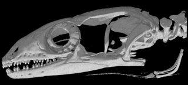
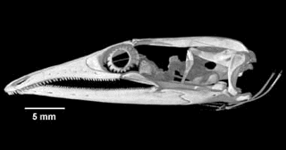

With intermittent funding (too much of it out of my own pocket) and the help of a small army of colleagues and assistants from 1962 through 2008, I have gathered and analyzed extensive data on ecological relationships of lizard faunas of some 32 desert study sites, which lie at roughly similar latitudes on three continents: western North America, southern Africa, and Western Australia.
In this interactive map, a series of 10-12 representative flatland desert areas were selected for investigation on each continent.
Study sites are homogeneous and continuous, extensive enough to facilitate sampling, and generally well suited for ecological analyses. Study areas vary in size from about half a square kilometer to several square kilometers.
Study sites exhibit a variety of habitat types, ranging from simple vegetation to more complex structure. Five lizard families are represented in the Kalahari, and seven occur in North America and Australia.
Australian deserts have 21 lizard genera and 69 species, African deserts 14 genera and 22 species, and North American deserts 12 genera and 14 species.
Together, these three continental desert-lizard systems support 16 of the currently recognized 38 different lizard families.

In 1986, I published a synthesis "Ecology and Natural History of Desert Lizards" (Princeton Univ. Press) with extensive summaries of data collected from 1962-1979. Since then, I have been fortunate to collect many more data on Australian lizards (12,634 new specimens) from 3 study sites. Many of these species are uncommon but I have managed to acquire adequate sample sizes for most. Understanding the ecology of rare species constitutes a major challenge for ecologists (Main 1982; Thompson et al. 2003; Pianka 2014). Some North American study sites have succumbed to urbanization, making my 1960's records of substantial historical and scientific interest. Essentially they represent a recent fossil record of what was there before humans usurped the habitat. Humans are bent on erasing the very signature of the evolution of life on this Earth making it urgent that we read the vanishing book before it is destroyed -- of course, we must also do our utmost to save it for future generations to study.
I often receive requests for raw data, but I have seldom been able to provide them. Originally, these data were collected primarily to elucidate niche segregation and diversity, but many more innovative analyses should be undertaken. For example, we offered an informative analysis of how frequently lizards had empty stomachs (Huey et al. 2001). Another analysis used dietary niche breadths to test food web theory (Winemiller et al. 2001). Still another study demonstrated that deep history has had a profound impact on present day diets (Vitt and Pianka 2005). When I die, I want my huge unique data set to be available to the next generation of frustrated lizard ecologists (Pianka 2016). This website constitutes my attempt to pass on these data. My goal is to preserve for posterity as much information as possible for each individual lizard (about 28,000 of them!). Accordingly, I have organized these data into a relational database format. Data have been collated, organized and cross checked for accuracy. These data are in a wide variety of formats: of those that have been digitized, some are still simple text files, others are in MS Word or Excel format, while others are Cricket Graph and Statview files. A substantial amount of data on microhabitats for about 14,000 lizards have not yet been digitized -- these should be entered into digital computer files. Lizards collected are summarized in the following two tables.
| Desert | Year | No. of Sites | No. Species | No. Individuals |
|---|---|---|---|---|
| Great Basin | 1962-64 | 3 | 4-5 | 558 |
| Mojave | 1963-64 | 4 | 6-8 | 1407 |
| Sonoran | 1963-69 | 5 | 7-10 | 2014 |
| Kalahari | 1969-70 | 10 | 11-17 | 5375 |
| Australia | 1966-68 | 8 | 15-39 | 2830 |
| Australia | 1978-79 | 2 | 32-42 | 3003 |
| Totals | 1962-79 | 32 | 4-42 | 15187 |
| Desert | Year | No. of Sites | No. Species | No. Individuals |
|---|---|---|---|---|
| Australia | 1989-91 | 2 | 34-43 | 3873 |
| Australia | 1992 | 3 | 28-33 | 1320 |
| Australia | 1995-96 | 2 | 20-43 | 2676 |
| Australia | 1998 | 2 | 36-37 | 2143 |
| Australia | 2003 | 2 | 33-38 | 1435 |
| Australia | 2008 | 2 | 38-40 | 1187 |
| Totals | 1989-08 | 3 | 20-55 | 12634 |
Data acquired up until 1979 (first table) were summarized with totals and means as appendices in Pianka (1986), but will now be made available in much greater detail for each individual lizard. Ecology has changed dramatically in the past couple decades, with much greater emphasis now being placed on conservation biology, rare species, and phylogenetically corrected analyses of evolution using modern comparative methods. Whereas data collected before 1979 were intended for studying niche partitioning and community structure, data collected since 1989 using pit traps (second table, above) were designed to study rare species, fire succession, long-term change, habitat and microhabitat requirements, adaptive radiations, and phylogenetic constraints. Thus, these new data complement the older data and are qualitatively different than those collected earlier. These new data have not yet been published and will be organized and mined for new insights before they are put into the public domain and made freely available and easily accessible to all.
This website contains tables with everything I know about each individual lizard, including locality and date of collection, time of activity, body and air temperature, snout-vent length (SVL), tail length plus tail condition, fresh body weight, other head size and leg length morphometric variables, microhabitat location or pit trap number, sex, reproductive condition, stomach contents, and parasite load (Methods). Auxiliary supporting data on climate, snakes, birds, mammals, GPS coordinates of pit trap locations, high-resolution aerial photographs with precise pit trap locations plotted on them are also included. These data should be useful to a wide variety of biologists, including conservation biologists, physiologists, and zoo biologists.
Projects that can be undertaken with these data:
-
Lizard faunas and foods eaten on the B-area have been examined at six different time intervals in the fire succession cycle from original long unburned to 13 years post-burn to better understand the dynamics of this ecosystem (Pianka and Goodyear 2014). These long-term census data provide insights in to how individual species respond to fires (species composition, relative abundance, dietary flexibility, and reproductive tactics). See also Fire Succession on the B-area.
-
Habitat requirements of Australian species can be analyzed using extensive pit trap records of many thousands of individuals of dozens of species over two decades. Precise positions of pit traps plotted on low-level, high-resolution aerial photographs should be analyzed using a geographical information system (GIS) to assess habitat requirements of various species, as well as whether species are positively or negatively correlated with each other over space and time. See also: Point-Diversity and Habitat Requirements.
-
About two thirds of the species are uncommon -- these can now be better characterized and I have finally been able to begin to attempt to understand rarity (a major challenge facing ecologists). See also Pianka 2014 and Rarity in Australian Desert Lizards.
-
Changes in relative abundances of species from site to site and through time at two long-term study sites should be compared and related to fires, climate change, and shrub encroachment.
-
Ecological and anatomical changes during ontogeny and sexual dimorphisms between males and females should be examined. See also Gender Differences.
-
Diets of diurnal species should be compared to those of nocturnal species.
-
Phylogenetically informed analyses of evolution of body and head size and shape, as well as head and tail proportions among these desert lizards should be undertaken. Some species are fossorial, others terrestrial, and still others are arboreal. Tail length varies widely among species, with relatively short tails in fossorial species (in some, the tail is shorter than snout-vent length, SVL).
For example, among pygopodids, terrestrial species like Pygopus have tails about twice as long as SVL, whereas most Delma have tails about 3 times SVL, but exceedingly long tails up to 4 times SVL occur among two closely-related arboreal pygopodid species (Delma concinna and Delma labialis). Among the six pygopodid genera, heads vary from shovel-like in fossorial species (Aprasia, Ophidiocephalus) to blunt snouts (Pygopus) to various degrees of long slender pointed snake-like noses (Delma, Lialis and Pletholax). Head morphologies can be related to ecologies (diets and microhabitats). We will exploit the phylogeny reconstructed by Jennings et al. (2003) but will include new sequences from additional slowly evolving nuclear genes (such as Rag-1) to clarify deep phylogenetic relationships. Heads have been scanned in Dr. Timothy Rowe's Digimorph laboratory using 3-dimensional high-resolution digital catscans. Similar phylogenetically informed studies should be undertaken for other species, especially for the species-rich Australian genus Ctenotus, but also among North American and Kalahari species.
|  |  |
Catscans of skulls of Pygopus and Lialis (from Digimorph web site). Heads have been scanned in Dr. Timothy Rowe's Digimorph laboratory using 3-dimensional high-resolution digital catscans:
Saving Pianka's Priceless Data
 No-one will ever be allowed to replicate Pianka's monumental efforts to
understand the ecology and diversity of the world's desert lizards. Such
invaluable data will never again be assembled. He is now organizing his massive
data set to preserve them for use by future generations.
Almost 28,000 specimens from three
continents representing more than 100 different species in 17 of the currently
recognized families of lizards have been safely deposited in major museums (DNA
samples of Australian species were also deposited in the Evolutionary Biology
Unit collection at the South Australian Museum in Adelaide.). Each specimen has
its own unique number with accompanying information on locality, date, habitat
and microhabitat, time, air and body temperature, fresh body weight, snout-vent
length, and tail length and condition. These data are lodged with each museum
as copies of field notes. Lizard specimens were also dissected and their sex
and reproductive condition assessed. Stomach contents were analyzed and
summarized. Ten body measurements were made on preserved specimens. Many of
these supplementary data remain at risk and will be lost with Pianka's demise
unless he can finish getting them digitized and entered into a data base. The
culmination of Pianka's life and work is now at stake -- as much information as
possible for each individual lizard should be preserved for posterity. These
data need to be organized in a relational database format describing different
types of data with queries to extract particular subsets. These data constitute
an invaluable resource for a wide variety of future studies, including seasonal
and long-term changes, ontogenetic changes, variation and sexual dimorphisms in
morphology and ecology (gender differences), microhabitat and habitat
requirements, thermal biology, reproductive biology, differences between
diurnal vs. nocturnal species, within-versus between-phenotype components of
niche breadth, dietary and microhabitat niche breadth and overlap, and point
diversity.
No-one will ever be allowed to replicate Pianka's monumental efforts to
understand the ecology and diversity of the world's desert lizards. Such
invaluable data will never again be assembled. He is now organizing his massive
data set to preserve them for use by future generations.
Almost 28,000 specimens from three
continents representing more than 100 different species in 17 of the currently
recognized families of lizards have been safely deposited in major museums (DNA
samples of Australian species were also deposited in the Evolutionary Biology
Unit collection at the South Australian Museum in Adelaide.). Each specimen has
its own unique number with accompanying information on locality, date, habitat
and microhabitat, time, air and body temperature, fresh body weight, snout-vent
length, and tail length and condition. These data are lodged with each museum
as copies of field notes. Lizard specimens were also dissected and their sex
and reproductive condition assessed. Stomach contents were analyzed and
summarized. Ten body measurements were made on preserved specimens. Many of
these supplementary data remain at risk and will be lost with Pianka's demise
unless he can finish getting them digitized and entered into a data base. The
culmination of Pianka's life and work is now at stake -- as much information as
possible for each individual lizard should be preserved for posterity. These
data need to be organized in a relational database format describing different
types of data with queries to extract particular subsets. These data constitute
an invaluable resource for a wide variety of future studies, including seasonal
and long-term changes, ontogenetic changes, variation and sexual dimorphisms in
morphology and ecology (gender differences), microhabitat and habitat
requirements, thermal biology, reproductive biology, differences between
diurnal vs. nocturnal species, within-versus between-phenotype components of
niche breadth, dietary and microhabitat niche breadth and overlap, and point
diversity.
- More on ERP's Past Research Projects
References
-
Goodyear, S. E. and E. R. Pianka. 2011. Spatial and temporal variation in diets of sympatric lizards (genus Ctenotus) in the Great Victoria Desert, Western Australia. J. Herpetology 45: 265-271. Read On Line. Download pdf.
-
Haydon, D. T., J. K. Friar, and E. R. Pianka. 2000a. Fire Driven Dynamic Mosaics in the Great Victoria Desert I: Fire Geometry. Landscape Ecology 15: 373-381. Abstract. Download pdf.
-
Haydon, D. T., J. K. Friar, and E. R. Pianka. 2000b. Fire Driven Dynamic Mosaics in the Great Victoria Desert II: A spatial and temporal landscape model. Landscape Ecology 15: 407-423. Abstract. Download pdf.
-
Huey, R. B. and J. J. Tewksbury. 2009. Can behavior douse the fire of climate warming? Proc. Nat. Acad. Sci. 106: 3647-3648. Download pdf.
-
Huey, R. B., E. R. Pianka, and T. W. Schoener (eds.) 1983. Lizard Ecology: Studies of a Model Organism. Harvard University Press. 501 pp.
-
Huey, R. B., E. R. Pianka, and L. J. Vitt. 2001. How often do lizards "run on empty?" Ecology 82: 1-7. Download pdf.
-
Jennings, W. B., E. R. Pianka, and S. Donnellan. 2003. Systematics of the lizard family Pygopodidae with implications for the diversification of Australian temperate biotas. Systematic Biology 52: 757-780. Download pdf.
-
Kearney, M., R. Shine, and W. Porter. 2009. The potential for behavioral thermoregulation to buffer "cold-blooded" animals against climate warming. Proc. Nat. Acad. Sci. 106: 3835-3840. Download pdf.
-
Leistner, O. A. 1967. The plant ecology of the southern Kalahari. Botanical Survey of South Africa, Memoirs 38: 1-172.
-
Magurran, A. E. and P. A. Henderson 2003. Explaining the excess of rare species in natural species abundance distributions. Nature 422 (6933): 714-716.
-
Main, A. R. 1982. Rare species: precious or dross? In Graves, R. H. and W. D. L. Ride (eds): Species at risk: Research in Australia, pp. 163-174. Australian Academy of Science, Canberra. Download pdf.
-
Milstead, W. W. (ed.). 1966. Lizard Ecology: A Symposium. University of Missouri Press, Columbia. 300 pp.
-
Morton, S. R. and C. D. James 1988. The diversity and abundance of lizards in arid Australia: a new hypothesis. American Naturalist, 132: 237-256. Download pdf.
-
Pianka, E. R. 1966. Convexity, desert lizards, and spatial heterogeneity. Ecology 47: 1055-1059. Download pdf.
-
Pianka, E.R. 1967. On lizard species diversity: North American flatland deserts. Ecology 48: 333-351. Download pdf.
-
Pianka, E.R. 1969. Habitat specificity, speciation, and species density in Australian desert lizards. Ecology 50: 498-502. Download pdf.
-
Pianka, E.R. 1971. Lizard species density in the Kalahari desert. Ecology 52: 1024-1029. Download pdf.
-
Pianka, E. R. 1973. The structure of lizard communities. Annual Review of Ecology and Systematics 4: 53-74. Selected as "This Week's Citation Classic" in Current Contents (Agriculture, Biology & Environmental Sciences) (1988), volume 19 (number 35): page 18. Download pdf.
-
Pianka, E. R. 1974. Niche overlap and diffuse competition. Proc. Nat. Acad Sci. 71: 2141-2145. Download pdf.
-
Pianka, E. R. 1975. Niche relations of desert lizards. Chapter 12 (pp. 292-314) in M. Cody and J. Diamond (eds.) Ecology and Evolution of Communities. Harvard University Press.
-
Pianka, E. R. 1986. Ecology and Natural History of Desert Lizards. Analyses of the Ecological Niche and Community Structure. Princeton University Press, Princeton, New Jersey.
-
Pianka, E. R. 1996. Long-term changes in Lizard Assemblages in the Great Victoria Desert: Dynamic Habitat Mosaics in Response to Wildfires